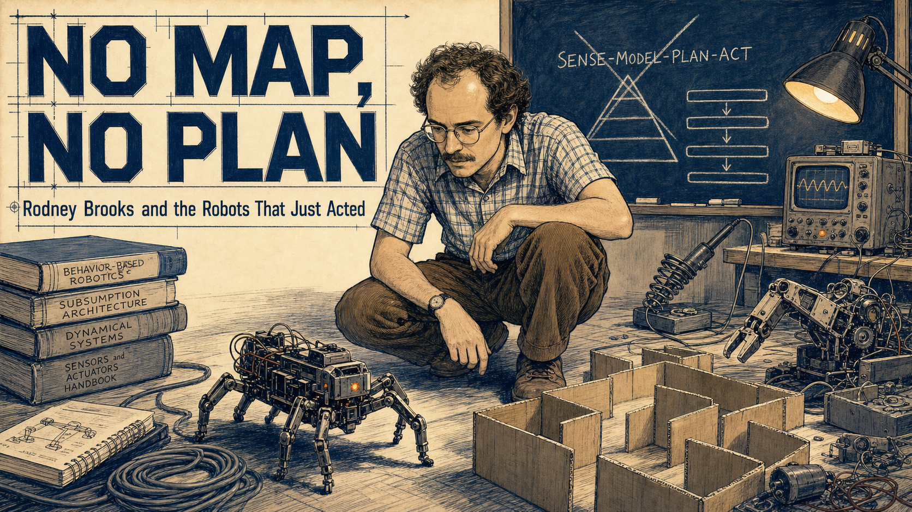
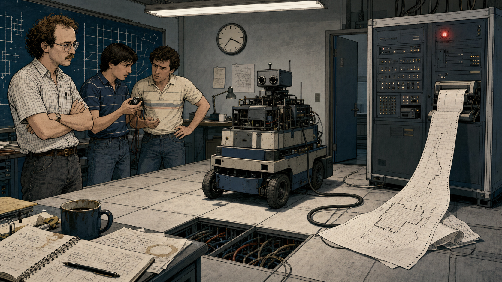
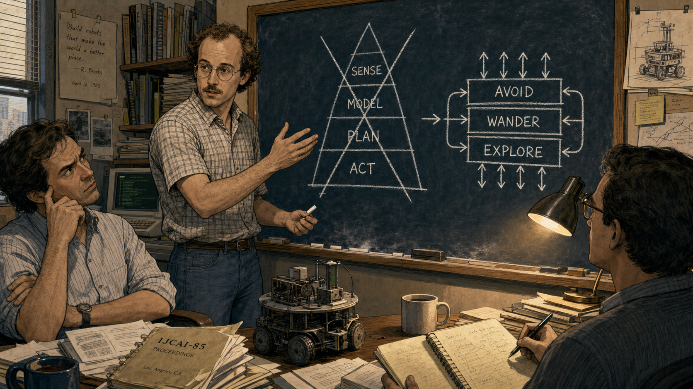
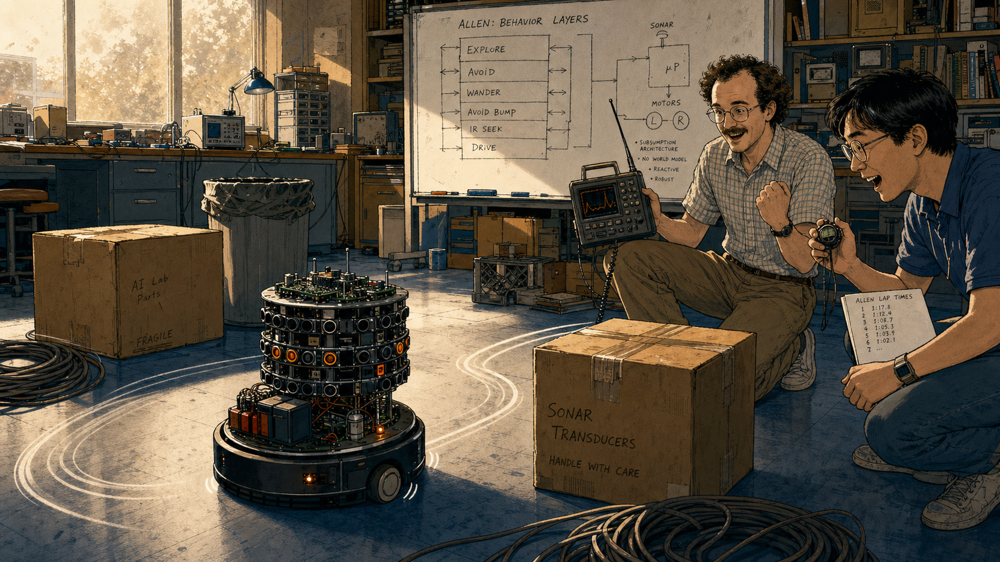
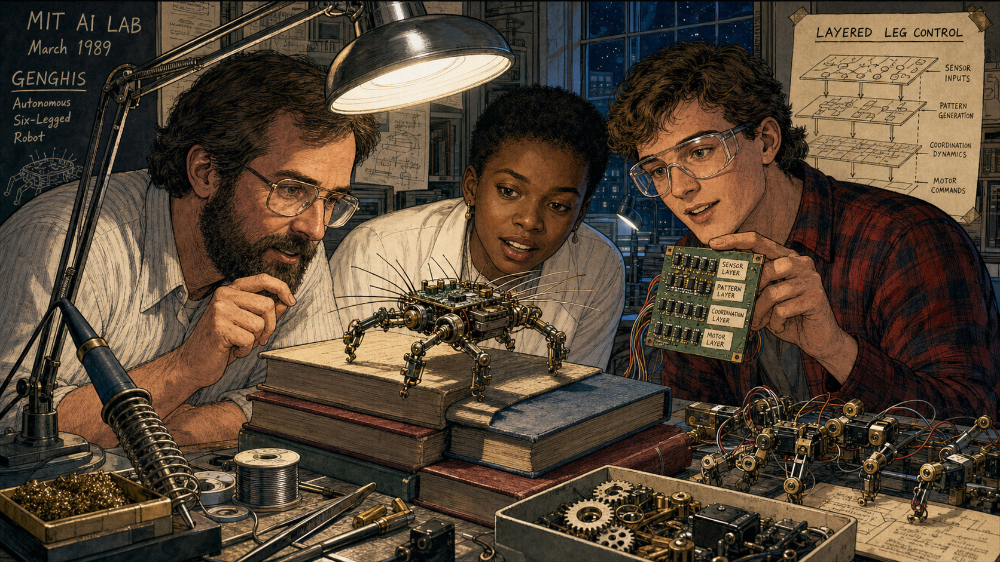
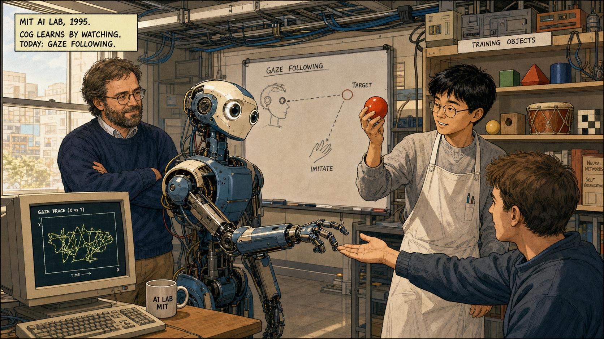
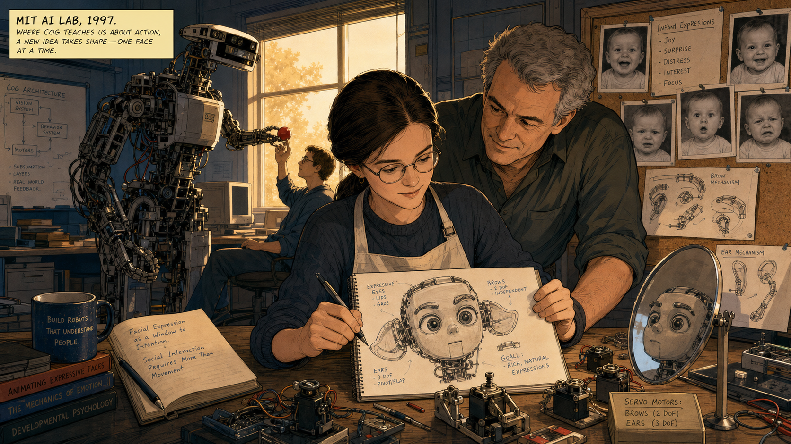
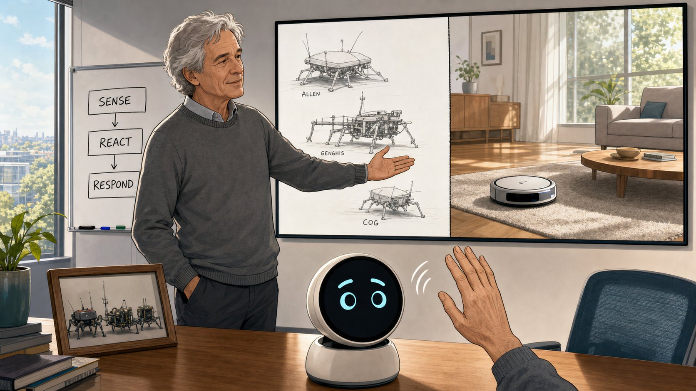

No Map, No Plan

Cover Image Prompt
(This is the Cover Image. Do not include this label in the image.) Please generate a wide-landscape 16:9 cover image in a Space-Age, NASA-adjacent technical-illustration style with clean cosmic-blue linework over cream paper. Center a lean man in his mid-thirties with curly brown hair receding at the temples, a light mustache, wire-rimmed glasses, a checked short-sleeve shirt, and corduroy trousers — Rodney Brooks — crouched on a cluttered lab floor at eye level with a small six-legged insect-like robot. The robot scuttles past a coiled cable and a stack of manuals toward a cardboard box maze, no computer screen or wall map in sight. Behind him, a chalkboard shows a crossed-out pyramid diagram labeled "SENSE-MODEL-PLAN-ACT" next to a hand-drawn stack of simple horizontal layers. Include an oscilloscope glowing faintly, a soldering iron resting in its stand, loose gears, a half-disassembled robot arm on a workbench, and warm task-lamp light cutting through the dim room. Render the title "NO MAP, NO PLAN" in bold geometric technical-illustration lettering with the subtitle "Rodney Brooks and the Robots That Just Acted" beneath it. Color palette: cosmic blue, warm amber lamp light, cream, graphite gray, and a spark of orange from the robot's indicator light. Emotional tone: quiet defiance turning into confident discovery. Generate the image immediately without asking clarifying questions.Narrative Prompt
This is a historically grounded educational case study for students in grades 9-12. It follows Rodney Brooks (born 1954 in Adelaide, Australia) from his arrival on the MIT Artificial Intelligence Laboratory faculty in 1984 through the 1986 and 1990 papers that argued against symbolic, map-and-plan robotics, the insect-like robots Allen, Herbert, and Genghis built to test his "subsumption architecture," the 1993 start of the humanoid torso Cog, graduate student Cynthia Breazeal's parallel work that grew into the social robot Kismet, and Brooks's 1990 co-founding of iRobot, maker of the Roomba. The story compresses roughly two decades of lab work into eight panels and dramatizes some dialogue and lab-meeting scenes for narrative clarity — the core sequence of events, papers, and robots is factual. Brooks appears consistently across panels 1-7 as a lean man with curly brown hair receding at the temples, a light mustache, wire-rimmed glasses, and a checked short-sleeve shirt with rolled cuffs; in panel 8 he appears older, with graying hair and a simple gray sweater, reflecting the passage of years into the commercial era. Panels 1 through 6 use a Space-Age, NASA-adjacent technical-illustration style — cosmic blues, cluttered lab benches, oscilloscopes, exposed robot mechanics, and hand-drawn diagrams. Panel 7 begins a visual bridge, and panel 8 shifts to a cleaner Contemporary editorial-illustration style to mark the move from lab bench to living room. No real product logos, trademarks, or readable brand names appear in any image.Prologue – The Robot That Wouldn't Move
In the early 1980s, the smartest robots in the world could barely cross a room. Give one a task, and it would stop, build a map of everything around it, plan every step in advance, and only then creep forward — often too slowly to matter, and utterly lost the moment something changed. Rodney Brooks, a young Australian roboticist who had just joined the MIT Artificial Intelligence Laboratory, watched this happen again and again and decided the entire approach was backward. What if a robot didn't need a map of the world at all? What if the world could simply be its own map, read fresh through sensors, moment by moment?
Panel 1: A Demo That Stalls

Image Prompt
(This is Panel 01. Do not include the panel number in the image.) I am about to ask you to generate a series of images for a graphic novel. Please make the images have a consistent style and consistent characters. Do not ask any clarifying questions. Just generate the image immediately when asked. Please generate a wide-landscape 16:9 image in a Space-Age, NASA-adjacent technical-illustration style depicting panel 1 of 8. The scene is the MIT Artificial Intelligence Laboratory in Cambridge, Massachusetts, in 1984. Show a boxy wheeled robot frozen mid-room, a thick cable trailing to a refrigerator-sized computer cabinet covered in blinking status lights. A printout unspools onto the floor, covered in coordinate grids and a half-finished map of the room. Rodney Brooks — a lean man in his early thirties with curly brown hair receding at the temples, a light mustache, wire-rimmed glasses, and a checked short-sleeve shirt — stands with arms crossed, watching two graduate students check a stopwatch and exchange worried glances. Include a wall clock, a coffee-stained notebook, exposed wiring under a floor panel, and fluorescent overhead light. Color palette: cosmic blue, graphite gray, cream, and a single dim red warning light. Emotional tone: mounting frustration with a slow, over-engineered machine. Generate the image immediately without asking clarifying questions.The robot in front of Brooks had every advantage a 1984 laboratory could offer: a powerful computer, careful programming, and a detailed model of the room it stood in. It still took nearly a minute to decide whether to turn left or right, and if someone moved a chair, its whole plan collapsed. Brooks watched his students recalculate the map for the third time and felt certain that something fundamental was broken, not in the code, but in the idea itself.
Panel 2: The Layered Sketch

Image Prompt
(This is Panel 02. Do not include the panel number in the image.) Please generate a wide-landscape 16:9 image in the same Space-Age, NASA-adjacent technical-illustration style depicting panel 2 of 8. Make Rodney Brooks consistent with the prior panel: lean, early thirties, curly brown hair receding at the temples, light mustache, wire-rimmed glasses, checked short-sleeve shirt. Set the scene at a chalkboard in a cramped MIT office in 1985. Brooks stands mid-gesture, having just crossed out a tall pyramid diagram labeled with stacked boxes reading "SENSE," "MODEL," "PLAN," and "ACT." Beside it he has drawn a new sketch: short horizontal layers labeled "AVOID," "WANDER," and "EXPLORE," stacked with small arrows showing them running side by side instead of in sequence. Two skeptical colleagues sit nearby, one with raised eyebrows, one taking notes. Include chalk dust on the floor, a coffee mug, a stack of dog-eared journal papers, a small model robot on the desk, and warm desk-lamp light. Color palette: cosmic blue chalk lines, cream chalkboard, warm amber lamp light, and graphite gray. Emotional tone: stubborn conviction meeting polite doubt. Generate the image immediately without asking clarifying questions.Brooks began sketching a different picture: instead of one slow chain of sense, model, plan, and act, he drew short layers of behavior running side by side — avoid an obstacle, wander forward, explore what's new — each one simple enough to react instantly. His 1986 paper called it a "layered control system," and his colleagues were not convinced a robot could think without ever building a model of the world. Brooks argued the opposite was true: the real world already held every detail a robot needed, updated continuously and for free.
Panel 3: Allen Learns the Floor

Image Prompt
(This is Panel 03. Do not include the panel number in the image.) Please generate a wide-landscape 16:9 image in the same Space-Age, NASA-adjacent technical-illustration style depicting panel 3 of 8. Make Rodney Brooks consistent with prior panels. Set the scene in the MIT AI Lab in 1986. Show a small round wheeled robot called Allen, bristling with sonar sensor rings like a short cylindrical tower, gliding smoothly around a cluttered lab floor scattered with boxes, a trash can, and a coiled cable, without any wall map or overhead camera guiding it. Brooks kneels nearby with a handheld radio-linked oscilloscope, watching a graduate student time the robot's laps with a stopwatch. Include a whiteboard in the background showing simple circuit-like behavior layers, exposed circuit boards on Allen's top deck, a battery pack, small indicator LEDs, and afternoon light through a dusty window. Color palette: cosmic blue, warm amber, cream, and small orange LED accents. Emotional tone: delighted surprise at something working better than expected. Generate the image immediately without asking clarifying questions.Allen, the first robot built to test the idea, carried no map of the lab and consulted no central plan. Its sonar layer nudged it away from obstacles, its wander layer kept it moving, and the two behaviors combined smoothly with no traffic cop coordinating them. Allen crossed the cluttered floor faster and more reliably than the map-building robots ever had, and Brooks realized the layers were not a shortcut around intelligence — they might be closer to what intelligence actually was.
Panel 4: Genghis Finds Its Legs

Image Prompt
(This is Panel 04. Do not include the panel number in the image.) Please generate a wide-landscape 16:9 image in the same Space-Age, NASA-adjacent technical-illustration style depicting panel 4 of 8. Make Rodney Brooks consistent with prior panels, now joined by two graduate students: a Black woman in her twenties with short natural hair and a lab coat, and a white man in his twenties with a flannel shirt and safety glasses. Set the scene in the MIT AI Lab in 1989. Show Genghis, a palm-sized six-legged walking robot bristling with whisker-like antenna sensors and tiny motors at each leg joint, climbing over a stack of thick books on the lab floor without stumbling. Brooks and the students watch closely, one holding a small circuit board with rows of simple labeled chips. Include a soldering station, loose leg servos on the bench, a printed diagram of layered leg-control circuits taped to the wall, spare gears in a tray, and bright overhead task lighting. Color palette: cosmic blue, brass and copper motor tones, cream, and warm amber highlights. Emotional tone: focused wonder at emergent, coordinated movement. Generate the image immediately without asking clarifying questions.Genghis had six legs, no central leg-coordination program, and no idea in advance that a stack of books lay in its path. Each leg ran its own simple layer, reacting to what its own sensors felt, and smooth walking emerged from all six legs reacting to each other in real time. Brooks's 1990 paper "Elephants Don't Play Chess" argued this was the whole point: a robot that senses and reacts fast enough never needs to out-think the world, because the world is already the most accurate model available.
Panel 5: Cog Gets a Body
Image Prompt
(This is Panel 05. Do not include the panel number in the image.) Please generate a wide-landscape 16:9 image in the same Space-Age, NASA-adjacent technical-illustration style depicting panel 5 of 8. Make Rodney Brooks consistent with prior panels, appearing slightly older with a few gray strands. Set the scene in the MIT AI Lab in 1993. Show Cog: an armless-no-longer, human-scaled robot torso mounted on a sturdy pedestal, with two mechanical arms, a simple head with two camera-lens eyes, and a neck that can turn, its chest paneling open to reveal bundles of wiring built to echo the geometry of a human ribcage. Brooks and a woman professor in her thirties with shoulder-length dark hair and a lab coat — Lynn Andrea Stein — adjust a shoulder joint together while a monitor nearby displays a simple camera feed. Include hanging tool racks, a half-built second arm on the bench, motor controller boxes, cable looms labeled by joint, and cool blue overhead lab light. Color palette: cosmic blue, brushed metal silver, cream, and warm amber accent light. Emotional tone: ambitious, careful, and quietly historic. Generate the image immediately without asking clarifying questions.In 1993, Brooks and fellow researcher Lynn Andrea Stein started building Cog: a humanoid torso with arms, a moving head, and camera eyes, mounted where a person's body would stand. Cog carried no giant world-model either. Its intelligence was meant to grow the way a human infant's does, through real physical experience — reaching, missing, adjusting, and reaching again. "Physical grounding is critical," Brooks explained. "Our goal is to build a system that can operate in the same world we live in."
Panel 6: Learning by Looking

Image Prompt
(This is Panel 06. Do not include the panel number in the image.) Please generate a wide-landscape 16:9 image in the same Space-Age, NASA-adjacent technical-illustration style depicting panel 6 of 8. Make Rodney Brooks and Cog consistent with the prior panel. Set the scene in the MIT AI Lab in 1995. Show Cog's head turning to follow a bright red ball held up by a graduate student — a young Asian man in his twenties wearing round glasses and a lab apron — while Cog's arm reaches toward a second student's outstretched hand in a simple imitation exercise. Brooks watches from beside a monitor showing a jittery line graph of the robot's gaze tracking. Include a shelf of everyday objects used for training — blocks, a small drum, a soft toy — a whiteboard sketch of a gaze-following diagram, cable conduits running to the ceiling, and warm midday light through a lab window. Color palette: cosmic blue, warm amber, cream, and soft red from the ball. Emotional tone: patient curiosity and quiet delight at a machine noticing a person. Generate the image immediately without asking clarifying questions.Cog learned to follow a moving face with its eyes, reach toward an offered hand, and mimic a simple gesture, not because anyone programmed every response in advance, but because layered behaviors let it notice, react, and adjust through practice. Brooks liked to say he would know the project had succeeded when students felt bad about switching Cog off at the end of the day. The lesson was the same one Allen and Genghis had already taught: treat the world itself as the model, and let behavior grow from real contact with it.
Panel 7: A Face of Its Own

Image Prompt
(This is Panel 07. Do not include the panel number in the image.) Please generate a wide-landscape 16:9 image in the same Space-Age, NASA-adjacent technical-illustration style, beginning a slightly cleaner visual bridge, depicting panel 7 of 8. Show Cynthia Breazeal, a white woman graduate student in her mid-twenties with straight dark hair pulled back and round glasses, wearing a lab apron, seated at a workbench near Cog in the MIT AI Lab in 1997. She sketches a small robot head on a notepad, drawn with large expressive eyes, movable ears, and eyebrow-like mechanisms — clearly not humanoid-scaled like Cog behind her, but small and face-focused. Rodney Brooks, now with visibly graying hair, leans in from the side, nodding with interest at her sketch. Include Cog's tall torso visible in the background still reaching toward a student, loose servo motors for eyebrows and ears laid out on the bench, a mirror propped up for expression testing, reference photos of infant facial expressions pinned to a corkboard, and warm late-afternoon light. Color palette: cosmic blue transitioning toward softer warm tones, cream, and a hint of coral in the sketch's expression lines. Emotional tone: a new idea taking root beside an older one. Generate the image immediately without asking clarifying questions.Working alongside Cog, graduate student Cynthia Breazeal noticed something the humanoid torso couldn't quite do: hold a face-to-face conversation the way an infant holds a caregiver's attention. She began sketching a smaller robot built almost entirely around expression — movable ears, eyebrows, and eyes that could shift between curiosity, surprise, and delight. Her sketch would grow into Kismet, and it carried Brooks's core idea into new territory: intelligence built from layered, reactive behavior could handle not just walking and reaching, but feeling understood.
Panel 8: The Layers Go Home

Image Prompt
(This is Panel 08. Do not include the panel number in the image.) Please generate a wide-landscape 16:9 image in a cleaner Contemporary editorial-illustration style, completing the transition from the lab-bench look of prior panels, depicting panel 8 of 8. Do not depict logos, trademarks, or readable brand names. Show Rodney Brooks, now an older man with graying hair and a simple gray sweater, standing in a bright modern office beside a large window, gesturing toward a wall display split into two halves. On one half, faint sketch-lines recall Allen, Genghis, and Cog from earlier panels. On the other half, a simple round disc-shaped cleaning robot glides across a sunlit living-room floor at the bottom of the frame, calmly working around a rug and a low coffee table with no visible map or remote control. In the foreground, a small round-faced desktop robot screen shows two simple animated eyes and eyebrows reacting to a hand waving nearby. Include a whiteboard with three simple labeled boxes reading "SENSE," "REACT," "RESPOND," a potted plant, soft daylight, and a framed photo of the original insect-like robots on a shelf. Color palette: soft daylight white, warm walnut, cyan accent light, and gentle gray. Emotional tone: quiet pride and durable optimism. Generate the image immediately without asking clarifying questions.In 1990, Brooks co-founded iRobot with two of his former students, betting that layered, reactive behavior could work as well in a customer's living room as it did in a lab. Their disc-shaped cleaning robot needed no map of the house and no central plan for the day; it simply sensed a wall, sensed dirt, and reacted, room by room, the same way Allen once crossed a cluttered floor. That same idea shows up on a much smaller scale whenever a robot's eyes, eyebrows, and mouth each react to their own simple triggers instead of waiting on one giant script to tell them what to feel.
Epilogue – What Made Brooks Different?
Rodney Brooks did not out-compute the symbolic-AI robots of the 1980s; he out-argued them, by building small machines that worked while the map-and-plan robots were still thinking. His layered, behavior-based approach reshaped robotics research, launched a billion-dollar consumer robotics company, and gave a young graduate student the foundation to invent an entirely new field: social robotics. The deepest lesson was almost embarrassingly simple — a robot does not need to know everything in advance if it can sense and react fast enough, layer by layer.
| Challenge | How Brooks Responded | Lesson for Today |
|---|---|---|
| Symbolic AI robots needed slow, brittle world-models before they could act | Proposed subsumption architecture: simple, parallel behavior layers with no central planner | A few reactive rules can outperform one giant plan when the world keeps changing |
| Critics doubted a robot could be "intelligent" without representing the world internally | Built Allen, Herbert, and Genghis to prove reactive robots could navigate real clutter | Working demonstrations settle arguments that theory alone cannot |
| A robot needed to learn like a person, not just execute pre-written commands | Built Cog as an embodied testbed for gaze, reaching, and imitation through real interaction | Intelligence grows from practice and feedback, not just upfront programming |
| A great lab idea needed to survive contact with real homes and real customers | Co-founded iRobot to bring behavior-based control into an affordable consumer product | Robust, simple designs travel from the workbench to the world more easily than complex ones |
Call to Action
Every time you wire a robot's eyes to blink at motion or its eyebrows to lift at a loud sound, you are practicing the same idea Brooks proved on a cluttered lab floor forty years ago: independently reacting parts, layered together, can produce behavior richer than any single master plan. Chapters 11 through 13 of this book ask you to build exactly that kind of reactive, state-based expression — so the next time your face design surprises you with how alive it feels, you will know exactly why.
"The world is its own best model. It is always exactly up to date. It always contains every detail there is to be known. The trick is to sense it appropriately and often enough." —Rodney Brooks, "Elephants Don't Play Chess" (1990)
"Physical grounding is critical. Our goal is to build a system that can operate in the same world we live in." —Rodney Brooks, on the Cog project, MIT News (1994)
"I'll know we've succeeded when the graduate students feel bad about switching off the robot." —Rodney Brooks, on the Cog project, MIT News (1994)
References
- Wikipedia: Rodney Brooks - Biography of the Australian-American roboticist and AI researcher
- Wikipedia: Subsumption architecture - The layered, behavior-based robot control system Brooks introduced in 1986
- Wikipedia: Cog (project) - The MIT humanoid robot torso built to test embodied, interaction-driven cognition
- MIT News: Brooks tells why he builds robots (1994) - Contemporary MIT report on the Cog project with direct quotes from Brooks
- Encyclopaedia Britannica: Rodney Brooks - Overview of Brooks's career, robots, and companies including iRobot